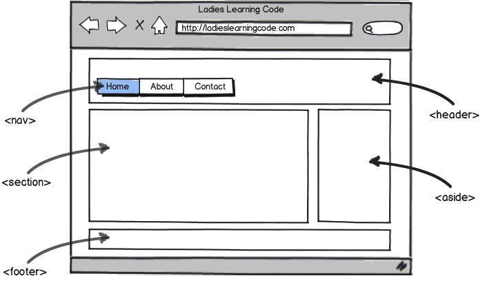

Introduction to HTML & CSS
Aug 24, 2012 & Aug 25, 2012
( Interactive code slides thanks to CoderDeck )
Aug 24, 2012 & Aug 25, 2012
( Interactive code slides thanks to CoderDeck )
4 tools you need to get started
Choose a modern web browser that has good development tools to help make building web pages easier.
(If you are unable to install Chrome:
install
Firefox and
Firebug
.)
Although you could write code in Notepad or TextEdit, choose a text editor with code colour highlighting and other helpful features.
There are many, many free and paid options. I recommend this one that's free to evaluate:
Use this bookmarklet to "inspect" any webpage and see how it's built. Click and drag the orange box into your bookmarks bar to install.
(If you can't see your bookmarks bar, use Ctrl/Cmd+Shift+B in Chrome to toggle visibility.)
Do you already have your own hosted website? FTP software will let you copy the files you work on today to somewhere where the rest of the world can see them!
Again, there are many, many free and paid options.
FileZilla
is good when you're more advanced.
Websites, webpages, and file structures
A website is made up of many webpages.

These webpages closely match a file folder structure.

Essentially this folder is located on a dedicated computer (also known as a server) that hosts websites.

about.html instead of About.html or ABOUT.html
s p a c e s in your file name. Use underscores instead.business_hours.html instead of business hours.htmlbusiness%20hours.html)
# & * in your file name.
about.html, contact.html instead of page1.html, page2.html
A webpage is mainly built using 3 web languages:
| HTML (Hypertext Markup Language) is the markup language. |
CSS (Cascading Style Sheets) is the style sheet language. |
JavaScript is the programming language. |
 |
 |
 |
| It should define the content. | It should define the presentation | It should define behaviour. |
The content layer
HTML was created for web browsers to easily read (not humans).
So this makes perfect sense to a web browser:
<!DOCTYPE html><html><head><title></title></head><body></body></html>
Whitespace through indentation (tabs) make your more HTML human-readable.
<!DOCTYPE html>
<html>
<head>
<title> </title>
</head>
<body>
</body>
</html>
The structure of a webpage is defined by HTML tags. Angled brackets denote tags, like this:
<tag>
Think about HTML tags like the beams of a house.
It's what holds up a webpage.

Tags typically come in pairs -- an opening tag and a closing tag with a forward slash:
<tag></tag>
<!DOCTYPE html>
<html>
<head>
<title> </title>
</head>
<body>
</body>
</html>
<!DOCTYPE html>
<html>
<head>
<title> </title>
</head>
<body>
</body>
</html>
Tags can be "nested" within other tags, like this:
<tag><tag></tag></tag>
<title> is nested between <head>. And <head> is nested between <html>
<!DOCTYPE html>
<html>
<head>
<title> </title>
</head>
<body>
</body>
</html>
<!DOCTYPE html>
<html>
<head>
<title> </title>
</head>
<body>
</body>
</html>
(This relationship is often referred to using the terms "parent" and "child".)
The innermost tag must be closed before trying to open up a new tag.
This would be incorrect: <html><head><title></html></head></title>
If I view exercises/barebones.html in a web browser, I don't see anything interesting yet...

But I can right-click and select View Page Source to see what the HTML is to confirm that it's not a blank file.
(I suggest that you do this yourself any time you see something you like so you can reverse-engineer it.)
<!DOCTYPE html>
This is a Document Type declaration. DOCTYPES are instructions to the web browser indicating what version of HTML the file is.
For example, it could be an older document type like the ones below,
or the newer HTML5 DOCTYPE that we're using above.
<!DOCTYPE HTML PUBLIC "-//W3C//DTD HTML 4.01//EN" "http://www.w3.org/TR/html4/strict.dtd">
<!DOCTYPE html PUBLIC "-//W3C//DTD XHTML 1.1//EN" "http://www.w3.org/TR/xhtml11/DTD/xhtml11.dtd">
(Consider how old versions of Microsoft Office or Photoshop have problems opening files that were created in later versions of the software.)
(If HTML tags are the beams of a house, you still need to put up walls and put in furniture for it to be liveable.)
The human-viewable content of a HTML tag goes in between the opening and closing tags like this:
<!DOCTYPE html>
<html>
<head>
<title>Home</title>
</head>
<body>
You are currently looking at index.html.
</body>
</html>
<head> vs <body>Using a copy of barebones.html, I'm going to edit it to answer the below questions and prepare you for the following exercise you'll do on your own time.
<title> tag?<head> tag versus the <body> tag?exercises/1_BASIC_HTML_WEBSITE/index.html in Chrome.index.html in the same 1_BASIC_HTML_WEBSITE folder and name it copy.html.copy.html in Sublime Text and edit some the content with the opening and closing tags.copy.html after changes have been made (Ctrl/Cmd+S).copy.html has changed in Chrome.copy.html. Re-save and re-view in Chrome.<hl>, <h2>, etc to <h6> - heading levels 1 to 6<p> - paragraph<b> or <strong> - bold<i> or <em> - italics or emphasis<center> - centered<blockquote> - indented block of code<button> - clickable button<textarea> - multiline text area for user input
Post them to this Google Moderator: http://goo.gl/mod/c4cm
(You'll need to be signed into your Gmail or other Google account.)
Get to know HTML even better
Self-closing tags don't format content, but instead they are used to render or embed objects in our page.
One of the easiest examples of this is the <hr /> tag used to display a horizontal rule on the page.
However the most often used example of this is the <br /> tag used to create a line break.
<p>This text<br />goes over<br />several<br />lines.</p>
This text
goes over
several
lines.
HTML tags identify structure and content to the browser but sometimes we need to define data that we don't see right away but it's used by the browser to help render special content like hyperlinks, images, or video.
For example, the <a> anchor tag is used to tell the browser that we want to link to somewhere else on our site or on the web. The content between the tags is what is displayed as the link text (typically underlined).
Visit <a>Ladies Learning Code</a>.
Visit Ladies Learning Code.
We need a way of setting the URL (e.g. http://ladieslearningcode.com) that the browser will request when someone clicks on the link.
For this, we use attributes.
Visit <a href="http://ladieslearningcode.com">Ladies Learning Code</a>.
Visit Ladies Learning Code.
href is the attributehttp://ladieslearningcode.com is the value of that attributeImages are an example of tags with attributes and is self-closing.
<img src="llc.gif" />
The src attribute tells the browser what the url source of our image is.

Tags can have more than one attribute, some required (like src) and others are optional:
width and height tell the browser what width/height to display the image with (which isn't necessarily the image's actual width/hegiht)alt is alternative text to display to visually impaired web visitors using screen readers.alt="" often used.)<img src="llc.gif" width="328" height="150" alt="Ladies Learning Code t-shirt logo" />
In the exercises/2_WORKING_WITH_IMAGES folder, there's a img folder. It's best practice to organize your images into its own folder.
Since the image is not in the same folder as index.html, if you wanted to refer to the image you would need to use a relative path.
<img src="img/llc.gif" />
The opposite of this (going up a folder level) would be:
src="../img/llc.gif"
Transvering over to a parallel folder level would be:
src="../folder/img/llc.gif"
Useful for your reference:
exercises/2_WORKING_WITH_IMAGES/index.html in Sublime Text.barebones.html.)
<img> tag. You can find 3 images in the img folder of 2_WORKING_WITH_IMAGES.<a> tag that points to "http://ladieslearningcode.com".<img> and <a> tags. Clicking on the image should open up "http://ladieslearningcode.com".Make sure to save index.html after changes have been made (Ctrl/Cmd+S) and before confirming your edits in Chrome.
Post them to Google Moderator: http://goo.gl/mod/c4cm
As time goes on, it has become easier and easier to embed multimedia content into websites.
From YouTube, you can find an Embed Code to put into your website (click on "Share" button below video, then "Embed") and YouTube's servers do all the rest of the work via the iframe tag.
<iframe width="560" height="315" src="http://www.youtube.com/embed/tlnFyjpV5Wo" frameborder="0" allowfullscreen></iframe>
Sometimes content you might want to group together (and treat differently with CSS) shouldn't be defined as a h1 or h2 or even a p paragraph. There are two kinds of generic containers available:
span - An inline container.div - An block container.<div>I'm a div!</div> <div>I'm another div!</div>
Historically, when making non-trivial websites, it required nesting lots of div tags within div tags (within div tags!) like this:
<div>
<div>
<div>Home</div> <div>About</div> <div>Contact</div>
</div>
</div>
<div>
Welcome to my blog!
<div>[...Blog Post...]</div>
<div>[...Blog Post...]</div>
</div>
<div>
[...Sidebar Ad...]
</div>
<div>
Copyright 2012
</div>
With HTML5, there are an increasing number of semantic tags that better describe larger blocks of content such as: header, footer, nav, section, article, and aside.
<header>
<nav>
<div>Home</div> <div>About</div> <div>Contact</div>
</nav>
</header>
<section>
Welcome to my blog!
<article>[...Blog Post...]</article>
<article>[...Blog Post...]</article>
</section>
<aside>
[...Sidebar Ad...]
</aside>
<footer>
Copyright 2012
</footer>
This helps web crawlers from search engines like Google or Bing better understand your content.
Even better, it helps you from missing a closing </div> tag and makes your HTML easier to read for everyone.
Let's use the previous code sample and make a new index.html in the exercises/website folder.
Review:
Add to your website! Create 2 more pages: an about page (about.html) and a contact page (contact.html)
<nav> tags, use the <a> tag with a href attribute to link all your pages together.
<title>'s.about.html (in between the <section> tags) with your picture/avatar and a bio.contact.html (in between the <section> tags) with contact info. (You can even try adding a Google Map.)index.html! We'll get to that after lunch.Post them to Google Moderator: http://goo.gl/mod/c4cm
cheatsheets folder.)The presentation layer
style attributeThe style attribute can be added to any visible HTML tag.
Here's the same result but using CSS selectors.
The <style> tag (placed between the <head> tags) is where CSS commonly goes.
Here's a CSS declaration dissected:

<h1>. (We'll get into more complex ones later.)Here's a CSS declaration dissected:
color properties accept colour values like blue or #FFFF00. font-size properties accept units of measurements like 12px (where "px" stands for pixels).View exercises/3_CSS/index.html in your browser. Notice how we're using a transparent PNG so it's hard to read all the white letters on a white background.
Let's add a <style> tag between the <head>. Then add this:
body { background: gray; }
Now the text is a bit hard to read on the gray background. Because the <body> tag is the highest possible visible HTML tag, the body selector will also allow us to target the font color on the entire page.
body { background: gray; color: white; }
The web has a number of fonts that are considered "web safe". Some of the most used fonts are:
Let's add a bit of contrast to our headers by using the Courier font on them.
h1 { font-family: Courier; }
h2 { font-family: Courier; }
Not all fonts are installed on all computers so it's recommended that you use a list of fonts. If the first font in the list isn't available, it will try to use the next.
body { background: gray; color: white; font-family: Helvetica, Verdana, Arial, sans-serif; }
(Notice how the font-family for the headers are still Courier? That's the "cascading" part of Cascading Style Sheets in action. Inline styles take precedence, then innermost tags, then outer tags.)
Font sizes are typically defined in pixels (px) or "ems" (em).
Headers have default font-sizes defined by the browser. Let's override them.
h1 { font-family: Courier; font-size: 25px; }
h2 { font-family: Courier; font-size: 22px; }
(When you've got more time, read this article for more info on font unit sizes.
In its simplest form, there are 2 weights:
By default, headers are already bolded. Let's remove the bold by applying the normal font weight on them.
h1 { font-family: Courier; font-size: 25px; font-weight: normal; }
h2 { font-family: Courier; font-size: 22px; font-weight: normal; }
As with HTML, extra whitespace and line breaks add to readability.
Our current CSS can be written like this:
<style>
body {
background: gray;
color: white;
font-family: Helvetica, Verdana, Arial, sans-serif;
}
h1 {
font-family: Courier;
font-size: 25px;
font-weight: normal;
}
h2 {
font-family: Courier;
font-size: 22px;
font-weight: normal;
}
</style>
Most HTML elements on a webpage look like this to the browser:

Example: Make headers look like label tape.
To add a border you need to set 3 properties:
border-weight, border-style, and border-color.
You can define them seperately, or using shorthand.
Note: CSS comments use the format /* comment */
Example: Make headers look like label tape.
To add padding you set 4 properties:
padding-top, padding-left, padding-bottom, and padding-left.
You can define them seperately, or using shorthand (in a clockwise direction).
Example: Make headers look like label tape.
Finally, add a background colour and change the font colour. Center-align the text too.
To illustrate margin, I've added two div's with borders.
By default, headers already have margin above and below as defined by the browser.
To add margins you set 4 properties:
margin-top, margin-left, margin-bottom, and margin-left.
You can define them seperately, or using shorthand (in a clockwise direction).
Layout is one of the most challenging things to do in CSS, but you can get predictable results in a few steps.
Returning back to exercises/website/index.html from this morning...
<header>
<nav>
<div>Home</div> <div>About</div> <div>Contact</div>
</nav>
</header>
<section>
Welcome to my blog!
<article>[...Blog Post...]</article>
<article>[...Blog Post...]</article>
</section>
<aside>
[...Sidebar Ad...]
</aside>
<footer>
Copyright 2012
</footer>
This requires us to give dimensions to some of our content, and position it accordingly.

It is important to know the overall width of your site so you can select column widths for the main <section> and the <aside> sidebar that will make sense.
Let's go ahead and set the <header> and <footer> to be 960 pixels wide. We'll add a gray border too, so we can see what's going on.
header {
width: 960px;
border: 1px solid gray;
}
footer {
width: 960px;
border: 1px solid gray;
}
If our site is 960px wide, we need to ensure that our columns don't exceed 960 - including margins! (e.g. 540 + 30 + 290 = 960)
section {
width: 560px;
border: 1px solid gray;
}
aside {
margin-left: 30px;
width: 290px;
border: 1px solid gray;
}
/* apply a natural box layout model to all elements */
* {
-moz-box-sizing: border-box;
-webkit-box-sizing: border-box;
box-sizing: border-box;
}
PRO TIP: Historically, padding wrecked havoc on our math. To avoid headaches, use the box-sizing property for every website you make to make sure your math adds up.
Block-style HTML containers like <p>, <div>, <section>, and <aside> automatically start on a new line.
To get our two columns to be side-by-side, use the float property. Values can be left, right, or none.
section {
width: 560px;
border: 1px solid gray;
float: left;
}
aside {
margin-left: 30px;
width: 290px;
border: 1px solid gray;
float: left;
}
You may notice that floats have the ability to affect the rest of the webpage in unexpected ways. It's important to always clear your floats.
One way is to use the clear property on an element that comes directly after the containers that are floating. Values can be left, right, or both.
footer {
width: 960px;
border: 1px solid gray;
clear: both;
}
If the elements that are floating are enclosed in another container, you can you apply overflow:auto to the parent container:
nav {
overflow: auto;
}
Another way (when all else fails) is via a line break tag with a clear attribute: <br clear="all" />
CSS is great for creating styles that you can apply over and over again.
Consider our navigation links. Wouldn't it be great if it looked more button-like?
Now that's a lot of CSS! What if you change you mind and decide that the font-family should be Arial for buttons now?
If you know that several containers are going to have similiar styles, use the class attribute and put the CSS into the <style> tag. Use a period to denote CSS selectors that are classes. e.g. .nav_button
<nav>
<div class="nav_button">Home</div>
<div><a href="about.html">About</a></div>
<div><a href="contact.html">Contact</a></div>
</nav>
<style>
.nav_button {
font-family: Georgia;
background-color: purple;
color: white;
font-size: 18px;
font-weight: bold;
text-align: center;
padding: 5px 10px 5px 10px;
width: 100px;
text-transform: uppercase;
letter-spacing: 2px;
float: left;
margin-right: 20px;
}
nav {
overflow: auto; /* clear floats */
}
</style>
CSS is also able to handle some basic UI interactions in our sites, such as allowing a 'hover' or mouse over state on various elements.
This is frequently done with items such as links.
It's best practice to not have too many inline <style> attributes in a webpage. Remember that CSS is meant to help keep the presentation layer seperate from the content layer.
When you need to target certain containers, use the id attribute and put the CSS into the <style> tag. Use a hash to denote CSS selectors that are classes. e.g. #centered_on_page
You should only have one instance of an ID per page. Any more can cause errors in your page and CSS -- and even later, JavaScript.
<div id="centered_on_page">Center me</div>
<style>
#centered_on_page {
margin: 0 auto;
width: 960px;
}
</style>
I'm going to add this to my exercise/website/index.html file and wrap everything already currently there within the <body> tag.
Instead of duplicating your <style> content for every webpage, make one single CSS document ending with a .css extension and link to it in the <head> tag instead of (or in addition to) a <style> tag.
<head> <link rel="stylesheet" href="styles.css" type="text/css"> </head>
Inside styles.css, there is no <style> tag:
body {
background-color: black;
color: white;
font-family: Helvetica, Arial, sans-serif;
}
h1 {
font-family: Georgia, "Times New Roman", serif;
}
Using FTP
Remember how a website is essentially a folder located on a dedicated computer (a server)?
If you have access to web hosting and would like to put your site online, there are a few vital pieces of information you need:
This information will generaly be provided to you by your hosting service provider.
There ARE conventions regarding what directory your files go into once you have connected to your server via FTP:
Once you have identified where your files need to go, it is often just a matter of dragging and dropping into your FTP program.
Once this is done, you can check your web address to see how things are looking!
Some tips and tricks for the future
One of the best ways to make sure that your HTML is being done correctly is to run it through an HTML validator on occasion.
You can find the HTML validator at http://validator.w3.org/
Hitting refresh and still seeing old stuff? The browser cache is the rip-your-hair-out gotcha! of every web developer.
Instructions for every browser (including the archaic one your client is running): http://www.wikihow.com/Clear-Your-Browser's-Cache
Also try out "Incognito Mode" in Chrome: Ctrl/Cmd+Shift+N